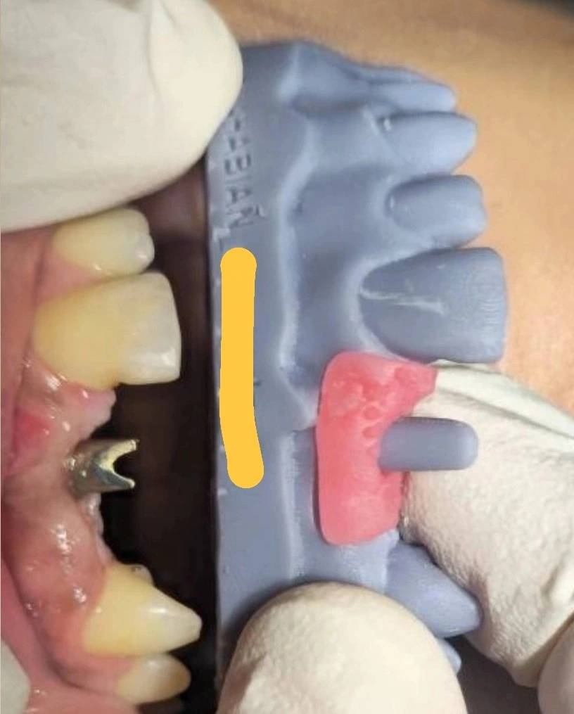

🟦 Insight 35 — کوتاه دیده شدن اباتمنت در دهان؛ تمایز خطای جهت از خطای ارتفاع

📝 توضیح بالینی
- در این کیس، یک کست پرینتشده داریم که اباتمنت پرینتشده روی آن قرار دارد، و در مقابل، یک اباتمنت میلشده که داخل دهان بسته شده است. با مقایسه نسبت به دندانهای مجاور، دیده میشود که اباتمنت داخل دهان صرفاً کوتاهتر است و میزان اکسپوز آن کمتر است.
- زاویه و چرخش اباتمنت داخل دهان با نسخه پرینتشده همخوانی دارد. یعنی از نظر موقعیت فضایی (orientation) اختلافی دیده نمیشود. این مشاهده کمک میکند بین دو نوع خطا تفکیک قائل شویم:
- اگر خطا در بستن اسکن بادی یا انتخاب لایبرری باشد (Data Error): اختلاف فقط در ارتفاع نخواهد بود؛ معمولاً اباتمنت داخل دهان نسبت به دندانهای واقعی دچار اختلاف در زاویه یا چرخش میشود و با وضعیت روی کست همراستا نیست.
- اما اگر فقط ارتفاع کمتر باشد و جهت کاملاً یکسان باشد: احتمال خطای فضایی (زاویه/چرخش) کم میشود و بیشتر باید به مشکل در انتقال یا ساخت بعد عمودی فکر کرد.
-
دو سناریوی محتمل:
- ۱. خطای ساخت (Lab Processing Error) — در مرحله میلینگ یا فینیشینگ، مثلاً هنگام جدا کردن sprue، بخشی از ارتفاع اباتمنت ناخواسته کم شده است.
- ۲. خطا در تفسیر بعد عمودی اسکن بادی — تکنسین نوع اسکن بادی را درست تشخیص داده (پس جهت درست است)، اما ارتفاع مرجع اسکن بادی بهدرستی منتقل یا تفسیر نشده و اباتمنت کوتاه ساخته شده است.
- نکته کلیدی: وقتی جهت و چرخش درست است ولی اباتمنت کوتاهتر دیده میشود، مشکل بهاحتمال زیاد در بعد عمودی (ساخت یا تفسیر ارتفاع) است؛ نه در بستن اسکن بادی یا انتخاب لایبرری از نظر جهت. این تمایز از تکرار بیمورد اسکن جلوگیری میکند و مسیر اصلاح را دقیقتر میکند.
محتوای این صفحه برای استفادهٔ آموزشی دندانپزشکان و دانشجویان دندانپزشکی تهیه شده است.